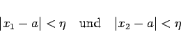
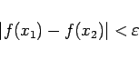

Inhalt Index DeskTop Bronstein

 Funktionen und ihre Darstellung Funktionsbegriff Grenzwert von Funktionen
Funktionen und ihre Darstellung Funktionsbegriff Grenzwert von Funktionen


Damit eine Funktion f(x) an der Stelle x=a einen Grenzwert besitzt, ist es notwendig und hinreichend, daß sich die Funktionswerte f(x1) und f(x2) für zwei beliebige Werte x1 und x2 der unabhängigen Variablen, die zum Definitionsbereich gehören und in hinreichender Nähe von a liegen, beliebig wenig voneinander unterscheiden.
Exakte Formulierung: Damit eine Funktion f(x) an der Stelle x=a einen Grenzwert besitzt, ist es notwendig und hinreichend, daß sich nach Vorgabe einer beliebig kleinen positiven Zahl  eine zweite positive Zahl
eine zweite positive Zahl  angeben läßt, so daß für zwei beliebige Werte x1 und x2 aus dem Definitionsbereich, die den Bedingungen
angeben läßt, so daß für zwei beliebige Werte x1 und x2 aus dem Definitionsbereich, die den Bedingungen
|  | (2.16a) |
genügen, die Ungleichung
|  | (2.16b) |
erfüllt ist.